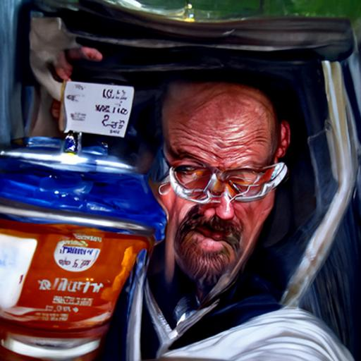

Color can be adjusted with hex code, rgb or hsl value, or name
Padding is extra space on the inside, margins are extra space on the outside
You can specify padding-top/left/right/bottom to make padding on different sides
You can combine padding attributes into one padding statement going in the order of top - right - down - left (clockwise)
Margins can be adjusted in the same ways as padding such as with -top/left/right/bottom
- Home
- About
- Contact Us
After a float, elements are wrapped around. You can use the display and float attributes to change the way that elements on your website are displayed on the screen. This would also be a way to wrap an image around text. After a float, elements are wrapped around. You can use the display and float attributes to change the way that elements on your website are displayed on the screen. This would also be a way to wrap an image around text.
Milkman
You can adjust your text font with CSS.
Style tags can be used to generically style the file